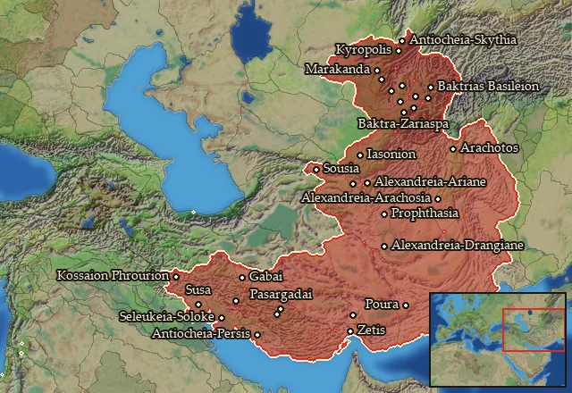

RTR: Imperium Surrectum
RTR: Imperium SurrectumRIS wiki › mercenaries
Persia
← all mercenary pools · wiki index
Mercenary pool: 4 units for hire in 31 regions.

Mercenaries
| Unit | Cost (dn) | Experience | At start | Most in pool | Added per turn | Who can hire | |
|---|---|---|---|---|---|---|---|
| Mercenary Persian Sparabara | 3,406 | 0 | 1 | 2 | 0.1938–0.3877 | Any faction | |
| Mercenary Persian Takabara | 3,297 | 0 | 1 | 2 | 0.2002–0.4005 | Any faction | |
| Mercenary Persian Spearmen-Archers | 4,776 | 2 | 1 | 2 | 0.1037–0.2073 | Any faction | |
| Mercenary Persian Noble Cavalry | 7,098 | 3 | 1 | 2 | 0.075–0.15 | Any faction |
Regions (31)
Anaouon · Anatolike Baktriane · Anatolike Sogdiane · Ano Baktriane · Ano Persia · Arachosia · Ariane · Baktriane · Boreia Baktriane · Darapsia · Drangiane · Elymais · Eoritia · Gedrosia · Hesperos Ariane · Iaxartes · Karmania · Kossaia-Mardia · Kyreschata · Mardyenia · Mese Ariane · Notia Karmania · Notia Margiane · Ouxia-Paraitakene · Oxeiane · Oxos · Pasargadaia-Kyrtia · Persia · Sogdiane · Sousiane · Taokene